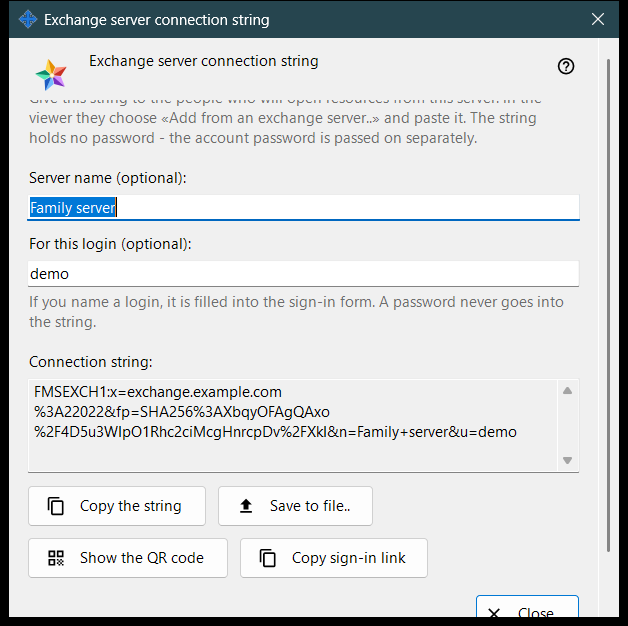
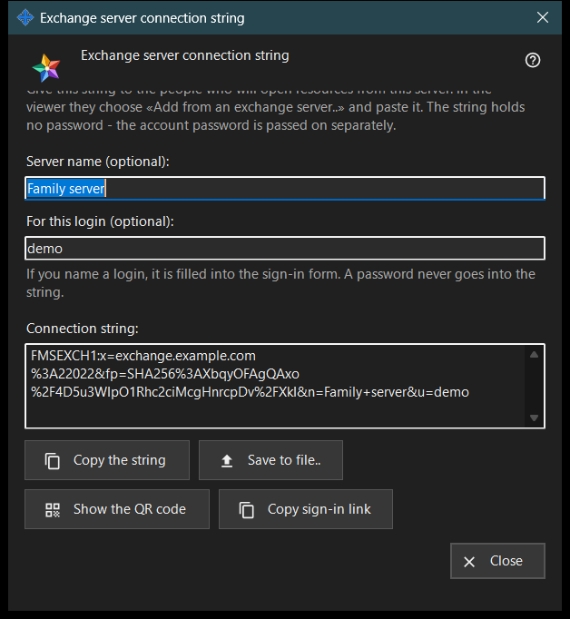

Exchange server connection string
What this is for
This window makes the connection string that other devices use to find this exchange server and to check its certificate. Open it with «Connection string and QR code..» in Exchange server settings or in the server's first-run welcome. The window changes no setting.


In this order
- Make sure the server has a certificate and the address for clients is set.
- Open the window: the string appears at once.
- If you want, type a server name and a login; the string is rebuilt a moment after you stop typing.
- Copy the string, save it to a file, show its QR code or copy the sign-in link.
- Give it to the other person and pass the account password separately.
- Press «Close».
The elements
When the button works
«Connection string and QR code..» is enabled only when the server has a certificate and the address for clients is set. With the address empty the button stays disabled and the hint under it says «Set the address for clients first: the connection string cannot be made without it.» Inside the window the buttons stay disabled while there is no string.
Server name and login
«Server name (optional):» takes up to 64 characters and is stored in the string as the server's name. «For this login (optional):» takes 3 to 64 characters (a-z, 0-9, dot, underscore, hyphen) and is filled into the sign-in form of the device that uses the string. A password never goes into the string.
Connection string
The read-only box «Connection string:» shows the result: the address for clients, the certificate fingerprint and the optional name and login. The device that receives it trusts the fingerprint from the string, so nobody compares it by hand.
Copy and save
«Copy the string» puts it on the clipboard as ordinary text, because it is not a secret, and the line below says «The string is copied.» «Save to file..» writes a .fmsexch text file (suggested name exchange-server.fmsexch) and shows its path; the other device reads it with «Open file..» in its exchange account window. If the clipboard is busy or the file cannot be written, a line says so.
QR code and sign-in link
«Show the QR code» opens a picture of the same string for scanning; it names a server and grants no access to anything. «Copy sign-in link» appears only when this server serves a web client; it copies a browser link that carries the same string.
If the string cannot be made
A line in the warning colour names the cause: the name or login is outside the limits; the server has no certificate (start the server once); or the exchange server did not answer. Correct the cause and the string is rebuilt. «Close» ends the window; the name and login are not saved.
Manager settings · SFTP sharing settings · Exchange server settings